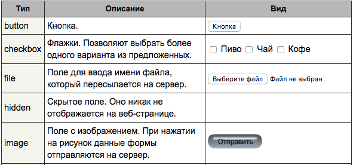

лекция #1
Программирование. Основы веб-разработки. HTML.
Короткое содержание
- Что такое программирование?
- Языки программирования
- Семантика и синтаксис
- Структуры данных
- Парадигмы и идиомы
- Теория алгоритмов и модели вычисления
- Псевдокод
- Антипаттерны
- HTML
- Домашнее задание
Программирование
- Что?
- Зачем?
Процесс написания кода для управления чем-либо.
Для автоматизации ежедневных процессов, обработки данных, веб-разработка, весело-же.
Языки программирования
набор правил(лексических, синтаксических и семантических) с помощью которых составляют программы для управления каким-либо процессом
- Структурные (Basic / Pascal ...)
- Процедурные (Lua, C, Matlab ...)
- Логические (Prolog ...)
- Объектно-ориентированные (C++, Delphi, Java, JavaScript, Objective-C, PHP, Python, Ruby, Swift ...)
- Функциональные (Erlang, Haskell ...)
- Мультипарадигмальные (C#, Scala ...)
Семантика
формализации значений кострукций в языках программирования методов построения их математических моделей.
Смысловое значение операторов и основных конструкций.
Синтаксис
набор правил описывающие правильное структуирование программы.
Структура данных
Единица позволяющая хранить / обрабатывать логически связанных данных.
В каждой структуре есть интерфейсы(функции) для добавления/поиска/изменения и удаления.
Тип данных
множество допустимых значений которые могут принимать данные которые входят в данный тип
набор операций(методов) которые можно осуществлять над данным данного типа
Парадигма программирования
подход к программированию, определение стиля написания компьютерных программ
- Императивное программирование (от машины к человеку)
- Декларативное программирование (от человека к машине))
Инструкции, последовательность, чтение из памяти, запись в память
Описание проблемы и ожидаемого результата(решения)
Идиома программирования
выражение составной конструкции или же решение задачи методом комбинации встроенных элементов языка
- Инкремент
- Обмен значениями
- Бесконечный цикл
- ...
Теория алгоритмов
Наука изучающая свойства и закономерности алгоритмови формирует формальные модели их представления.
Что она делает?
- Классифицирует алгоритмы по уровню сложности
- Доказывает алгоритмическую неразрешимость
- Контролирует качество алгоримов
- Анализирует трудоемкость алгоритмов
Модели вычислений
- Машина Тьюринга
- Лямбда-исчисление
- Комбинаторная логика
- Регистровые машины
Абстрактный исполнитель для формализации понятия алгоритма.
Исследование лямбда-выражений.
Изучение и анализ природы парадоксов
RAM-машина - абстрактная вычислительная машина, моделирующая компьютер с произвольным доступом к памяти. Используется дла анализа алгоритма.
Псевдокод
Язык описания алгоритма с использованием ключевых слов языка, но опускающий несущественные подробности и специфический синтаксис
# пример псевдокода
если переменная A больше или равна 10, то:
# какая-то операция с переменной
иначе:
# другая операция с переменной
# пример реального кода
if A >= 10:
# data-processing 1
else:
# data-processing 2
Антипаттерны
- Спагетти-код
- Равиоли-код
- Пахлава-код
- Катамари-код
Спагетти-код
Плохо структурированная, запутанная и трудная для понимания программа в которой слишком много операторов перехода, исключений
Равиоли-код
Большое количество независимых компонентов
Пахлава-код
Слишком много слоев абстракции для простой задачи
Катамари-код
Бывший чистый код, облепившийся функциональностью
HTML
HyperText Markup Language - язык гипертекстовой разметки
Запрос / Ответ
- request
- response
Разметка тегами
Минимальная структура документа
<!DOCTYPE HTML>
<html>
<head>
<meta charset="utf-8">
<title>Title</title>
</head>
<body>
<!-- тело страницы -->
</body>
</html>Заголовки и параграфы
<h1>Заголовок первого уровня</h1>
<h2></h2>
<h3></h3>
<h4></h4>
<h5></h5>
<h6></h6>
<p>параграф</p>
ТЕГ div
Элемент <div> является блочным элементом и предназначен для выделения фрагмента документа с целью изменения вида содержимого. Как правило, вид блока управляется с помощью стилей. Чтобы не описывать каждый раз стиль внутри тега, можно выделить стиль во внешнюю таблицу стилей, а для тега добавить атрибут class или id с именем селектора.
<div>...</div>
Форматирование текста
Аттрибуты
Порядок атрибутов в любом теге не имеет значения и на результат отображения элемента не влияет. Поэтому теги даного вида по своему действию равны.
<img src="/images/title.gif" width="438" height="118">
<img height="118" width="438" src="/images/title.gif">
Гиперссылки
Гиперссылка (или ссылка) это слово, группа слов, или изображение, которые вы можете кликнуть , чтобы перепрыгнуть на новый документ или раздел текущего документа. Когда вы перемещаете курсор над ссылкой в Веб странице, стрелка превразается в маленькую руку. Ссылки определяются в HTML используя тег <a>. Тег <a> может быть использован двумя способами:
- Чтобы создать ссылку на другой документ - используя атрибут href
- Чтобы сделать закладку внутри документа - используя атрибут name
<a href="Адрес">Текст ссылки</a>
Изображения
В HTML, изображения определяются с помощью тега <img>. Тег <img> пуст, он содержит только атрибуты и не закрывается
<img src="url" alt="some_text" style="width:width;height:height;">
<img src="wrongname.gif" alt="HTML5 Icon" style="width:128px;height:128px;">
- *.jpg
- *.png
- *.gif
Таблицы
<table style="width:100% border: 1px solid black">
<tr>
<th>Firstname</th>
<th>Lastname</th>
<th>Age</th>
</tr>
<tr>
<td>Jill</td>
<td>Smith</td>
<td>50</td>
</tr>
<tr>
<td>Eve</td>
<td>Jackson</td>
<td>94</td>
</tr>
</table>
Результат
Формы
- action - Адрес программы или документа, который обрабатывает данные формы.
- autocomplete - Включает автозаполнение полей формы.
- method - Метод протокола HTTP.
- name - Имя формы.
- novalidate - Отменяет встроенную проверку данных формы на корректность ввода.
<form action="URL" method="POST" novalidate>
...
</form>
ТЕГ Input
Тег <input> является одним из разносторонних элементов формы и позволяет создавать разные элементы интерфейса и обеспечить взаимодействие с пользователем. Главным образом <input> предназначен для создания текстовых полей, различных кнопок, переключателей и флажков. Хотя элемент <input> не требуется помещать внутрь контейнера <form>, определяющего форму, но если введенные пользователем данные должны быть отправлены на сервер, где их обрабатывает серверная программа, то указывать <form> обязательно.
<input атрибуты>
ТЕГ Input
- type - Сообщает браузеру, к какому типу относится элемент формы.
- value - Значение элемента.
- pattern - Устанавливает шаблон ввода.
- maxlength - Максимальное количество символов разрешенных в тексте.
- minlength - Минимальное количество символов разрешенных в тексте.
- placeholder - Выводит подсказывающий текст.
- readonly - Устанавливает, что поле не может изменяться пользователем.
- required - Обязательное для заполнения поле.
ТЕГ Input

ТЕГ Label
Тег <label> устанавливает связь между определенной меткой, в качестве которой обычно выступает текст, и элементом формы (<input>, <select>, <textarea>). Такая связь необходима, чтобы изменять значения элементов формы при нажатии курсором мыши на текст.
<label for="идентификатор">Текст</label>
<input id="идентификатор">
ТЕГ Button
Тег <button> создает на веб-странице кнопки и по своему действию напоминает результат, получаемый с помощью тега <input> (с атрибутом type="button | reset | submit"). В отличие от этого тега, <button> предлагает расширенные возможности по созданию кнопок. Например, на подобной кнопке можно размещать любые элементы HTML, в том числе изображения. Используя стили можно определить вид кнопки путем изменения шрифта, цвета фона, размеров и других параметров.
<form>
<button>...</button>
</form>
Домашнее задание
- TBD